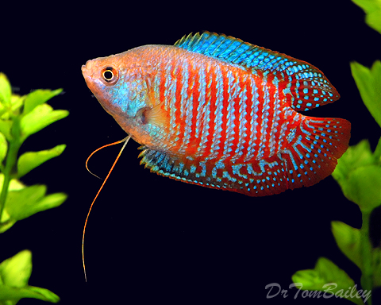
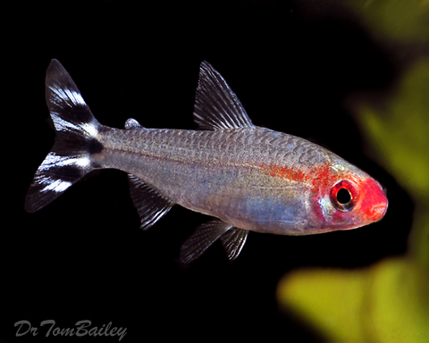
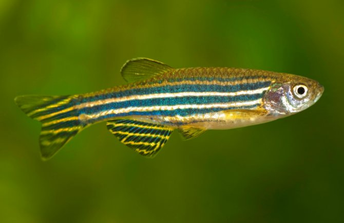
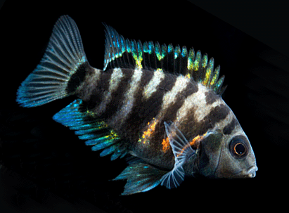
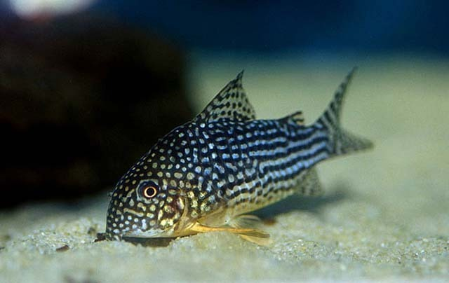
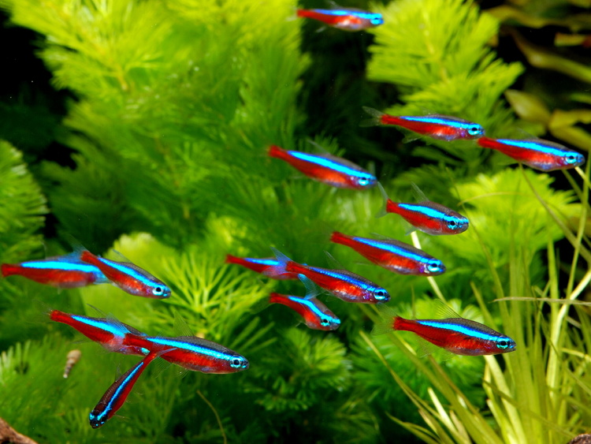

What Makes a Good Beginner Fish
When you first get into the hobby, many people do not take into consideration the size of the fish they want to get, or the dietary requirements of their fish. Your can't just throw a bunch of fish together and feed them a few times a day. There is a lot more than that. A good aquarium fish should be relatively peaceful, is hardy and does not grow too big. Fish like this dwarf gourami.
When you get your first fish, a more aggressive fish such as a tiger oscar might not be the most suitable. The more peaceful the better, fish like livebearers (mollies, guppies and swordtails etc) are peaceful and don't grow fairly large. They are also very hardy.
8.Rummynose Tetras
Unlike the neon tetra which is more sensitive the rummy nose tetra is pretty hardy, peaceful and a very tight schooling fish. These fish prefer to live in a group of 6 or more, when getting these fish make sure to have scattered rocks and pieces of driftwood to simulate its natural habitat of south america. These fish are omnivorous so make sure to feed them a variety of food not just the standard flake
7. Zebra danio
Danios are very hardy and are generally very easy to keep. These fish like the rummynose tetra like to be kept in groups of 6 or more. These fish prefer colder waters and can be classified as coldwater fish. when buying these fish make sure to have a large swimming space at the top of the tank as well as sufficient cover so that they can hide. Also like the rummynose tetra these fish are omnivorous preferring a diet of fresh diet of vegetables and frozen bloodworms, but flakes will suffice.
6. Convict Cichlids
Even though most cichlids are deemed unsuitable for beginners because of their levels of aggression, convicts are an exception. As long as you don’t keep two males together you are fine. However these fish are one of the easiest to breed in the entire hobby. If you have a male and female there is a 100% change to end up with a tank full of small fry. If you are buying this fish make sure to get only females, they spawn once every two months and you will not be able to house that many fry. These fish should not be kept with plants because from personal experience they will tear holes into everything. Scatter rocks around the aquarium and supply them with a little bit of driftwood. These fish are omnivorous and should be fed a variety of food such as flakes bloodworms and vegetables.

5. Cherry barbs
Cherry barbs are a very hardy fish and look pretty nice, these fish are pretty social but they do not need to be in a group of 6 in your aquarium, 2 or 3 will do. These fish should be housed in a 30 gallon, well planted and with mildly acidic water. there should also be enough space for swimming, these fish have a very timid personality and should be housed with fish with a similar personality.
.jpg)
4. Livebearers
Livebearers are a group of fish that instead of laying eggs give birth to live young. Livebearers usually refers to guppies, mollies, swordtails and platies. These fish are very hardy and can tolerate colder water. These fish don't have many dietary requirements, they however carry one massive downside. These fish will not be that healthy, unlike the other fish I mentioned livebearers usually have a shorter lifespan and a higher death percentage than most other fish. I suggest buying these fish at small fish stores, they might be more expensive but they will definitely be more healthy.

3. Corydoras
These small catfish are a wonderful eddition to any aquarium. They are one of the best clean up crews you can buy and they come in a variety of colours and sizes. These small fish prefer to be kept in a group of 3 or more. These fish like to be kept in a well covered aquarium. The best thing about these fish is that caring for them are fairly straightforward. These fish can live up to 5 years, there tankmates should be peaceful, these fish aren't carnivores so they can be kept with brine shrimp, gouramis and livebearers. They are also very friendly so they can be kept with very timid fish such as to otocinclus catfish. When buying cory catfish you should make sure that they're barbles don't appear to have sustained any damage. Any damage should indicate that they are unhealthy. Even though these fish are small they are very active and an excellent addition to any aquarium.
2. Cardinal Tetras
These fish are one of the most colourful freshwater fish you can buy, compared to the smaller neon tetra the cardinal tetra is much more hardy, they can survive in tougher conditions and don’t need lots of care. These fish are schooling fish and prefer to be kept in groups of 6. These fish do not have special dietary requirements and are generally easy to care for.
1. Dwarf gouramis
Dwarf Gouramis require a tank that is 10 gallons or larger. The aquarium should be heavily planted and have at least part of the surface covered with floating plants. A darker substrate will help show-off the gourami's colors, and peat filtration is recommended. Regular water changes are a must, as this gourami can be susceptible to disease. They should not be kept with large, aggressive fish, but are compatible with other small, peaceful fish as well as fellow gouramis. Loud noises often scare them, so the tank should be in a quiet area.These fish are one of my favourite in the hobby, they are also labyrinth fish meaning that they can breath air so they can tolerate tougher conditions.